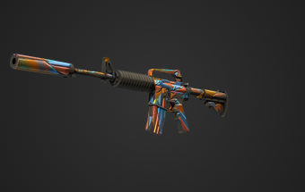
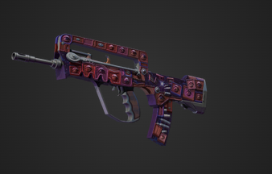
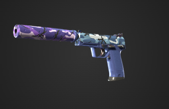
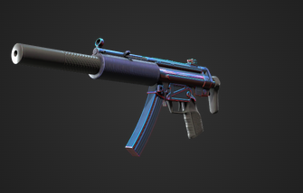
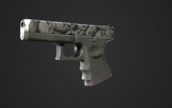
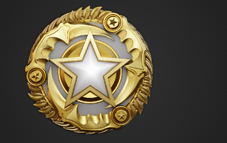
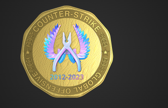
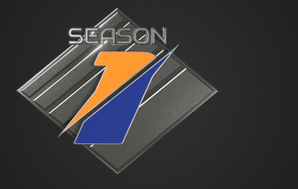
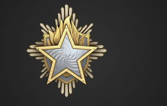

AK-47 | Disruptor fantasma
Rifle de tipo clasificado

Potente y fiable, el AK-47 es uno de los rifles de asalto más famosos del mundo. Es sumamente letal en ráfagas cortas y controladas. Se ha personalizado con la imagen de una criatura quimérica sobre una base negra mate.
M4A1-S | Vidrio de plomo
Rifle de tipo clasificado
El M4A1 con silenciador tiene un cargador más pequeño que su homólogo no silenciado, pero proporciona disparos menos audibles con menor retroceso y mayor precisión. Se ha pintado a mano simulando un cristal azul y naranja roto.
FAMAS | Movimientos oculares rápidos
Rifle de tipo clasificado
Una opción económica para los jugadores con poco dinero, el FAMAS cubre con efectividad el vacío que hay entre el más caro de los rifles y el subfusil menos efectivo. Se ha personalizado con celdas rosas conectadas entre sí que llevan pintados ojos de aspecto realista.
USP-S | Camuflaje alpino
Pistola de grado militar
La favorita de los fans de Counter‑Strike: Source, la pistola USP con silenciador desmontable tiene menos retroceso y hace menos ruido para no llamar la atención. Se ha personalizado con un diseño de camuflaje en color azul y morado.
MP5-SD StatTrak™ | Liquidación
Subfusil StatTrak™ de grado militar
A menudo imitado pero nunca igualado, el emblemático MP5 es quizá el subfusil más versátil y popular del mundo. Esta variante SD viene equipada con un silenciador integrado, lo que convierte a un arma ya de por sí formidable en silenciosa. Su oscura base, junto a los meticulosamente seleccionados reflejos rojos y azules, hacen que esta pintura personalizada para el MP5-SD parezca estar brillando bajo luz ambiental.
Víctimas confirmadas por StatTrak™: 249
Glock-18 StatTrak™ | Catacumbas
Pistola StatTrak™ de grado militar
La Glock 18 es una práctica pistola de primera ronda que funciona mejor contra oponentes sin protección y cuenta con un modo ráfaga de tres balas. Se le ha aplicado un adhesivo hidrográfico de calaveras sobre una base de pintura metálica plata.
Víctimas confirmadas por StatTrak™: 140
Medalla de Servicio de 2025
Coleccionable de aspecto extraordinario
Otorgada por un servicio y logros excepcionales en 2025.
Fecha de expedición: 20 mar 2025 GMT
Insignia de Global Offensive
Coleccionable de aspecto extraordinario
Esta insignia conmemora haber formado parte lealmente de la comunidad de Counter‑Strike: Global Offensive antes del lanzamiento de Counter‑Strike 2.
Las leyendas nunca mueren.
Medalla de la primera temporada del modo Premier
Coleccionable de aspecto extraordinario
Esta es una medalla conmemorativa otorgada por tu participación activa en la primera temporada del modo Premier.
Medalla de Servicio de 2023
Coleccionable de aspecto extraordinario
Otorgada por un servicio y logros excepcionales en 2023.
Fecha de expedición: 16 may 2023 GMT